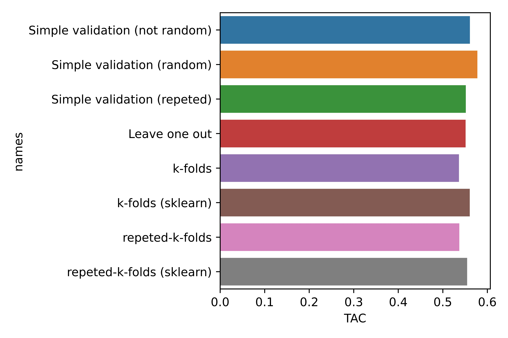

Chapter 9 Comparación final
Importamos las librerias de visualización de datos que usaremos para realizar la comparación final.
import seaborn as sns
import matplotlib.pyplot as pltCreamos un data-frame con los distintos valores de la métrica ECM obtenidos con los distintos algoritmos de validación utilizados:
ECM_df = pd.DataFrame({'ECM' : [ECM_test_Simple_Validation_not_random , ECM_test_Simple_Validation_random, ECM_test_Simple_Validation_repeated, ECM_test_leave_one_out, ECM_K_Folds, ECM_K_Folds_sklearn , ECM_repeated_K_Folds, ECM_repeated_K_Folds_sklearn],
'names' : ['Simple validation (not random)' , 'Simple validation (random)', 'Simple validation (repeted)', 'Leave one out', 'k-folds', 'k-folds (sklearn)', 'repeted-k-folds', 'repeted-k-folds (sklearn)']})fig, ax = plt.subplots()
p3 = sns.barplot(x="ECM", y ='names' , data=ECM_df)
fig.savefig('p3.jpg', format='jpg', dpi=1200)
Creamos un data-frame con los distintos valores de la métrica TAC obtenidos con los distintos algoritmos de validación utilizados:
TAC_df = pd.DataFrame({'TAC' : [TAC_test_Simple_Validation_not_random , TAC_test_Simple_Validation_random, TAC_test_Simple_Validation_repeated, TAC_test_leave_one_out, TAC_K_Folds, TAC_K_Folds_sklearn, TAC_repeated_K_Folds, TAC_repeated_K_Folds_sklearn],
'names' : ['Simple validation (not random)' , 'Simple validation (random)', 'Simple validation (repeted)', 'Leave one out', 'k-folds', 'k-folds (sklearn)', 'repeted-k-folds', 'repeted-k-folds (sklearn)']})fig, ax = plt.subplots()
p4 = sns.barplot(x="TAC", y ='names' , data=TAC_df)
fig.savefig('p4.jpg', format='jpg', dpi=1200)